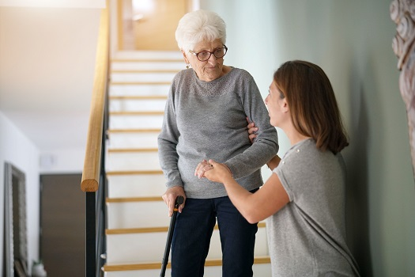
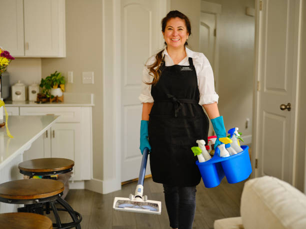

-

Residential Accommodation
Modern old age homes prioritize providing seniors with a comfortable and safe living space. The accommodation options can vary from private apartments to shared suites, depending on individual preferences. These living spaces are designed to be accessible, featuring features like handrails, non-slip flooring, and spacious bathrooms to ensure the safety and convenience of residents.
-
Health and Medical Facilities
Healthcare is a paramount concern for senior citizens. Old age homes often provide access to medical facilities and professionals, ensuring that residents receive regular health check-ups, medication management, and emergency medical assistance when needed. This includes having nursing staff on-site to address any health-related concerns promptly.
Maintaining a healthy diet is crucial for the elderly. Old age homes offer well-balanced and nutritious meal plans that cater to specific dietary needs. Nutritional experts often design these menus to ensure that residents receive the essential vitamins and minerals required for their well-being.
-

Family-Like Atmosphere
To combat isolation and encourage social interaction, old age homes offer a variety of recreational and social activities. These can include fitness classes, art workshops, gardening clubs, book clubs, and game nights. Such activities not only keep residents engaged but also foster a sense of camaraderie among them.
-

Security and Safety Measures
Old age homes implement advanced security measures to ensure the safety of their residents. These measures can include surveillance cameras, secure entry points, and emergency response systems that allow residents to call for help in case of emergencies.
-

Maintenance and Housekeeping:
Old age homes handle maintenance and housekeeping tasks, alleviating residents' worries about property upkeep. This allows seniors to focus on enjoying their time and pursuing activities they love without the burden of household chores.